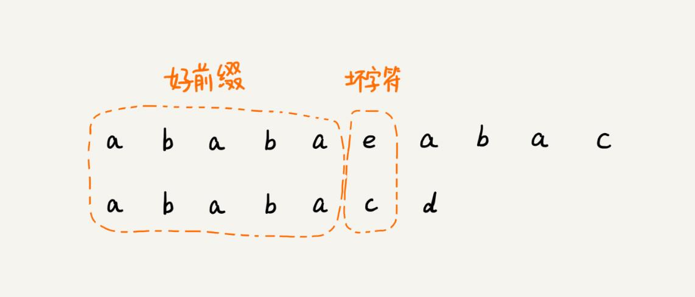
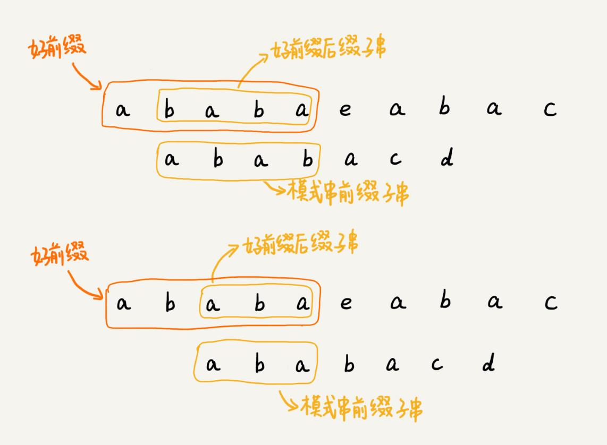
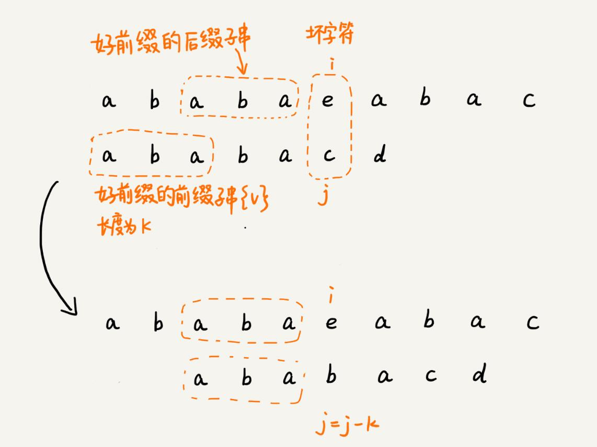
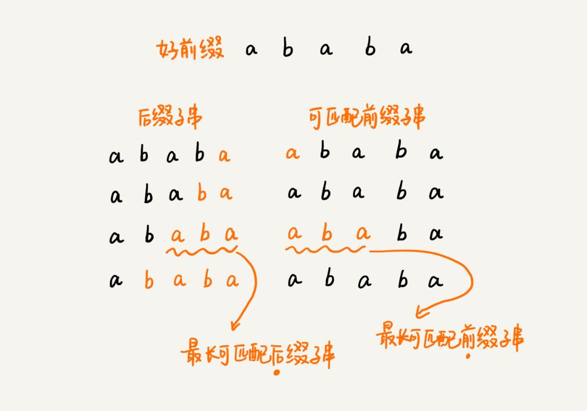
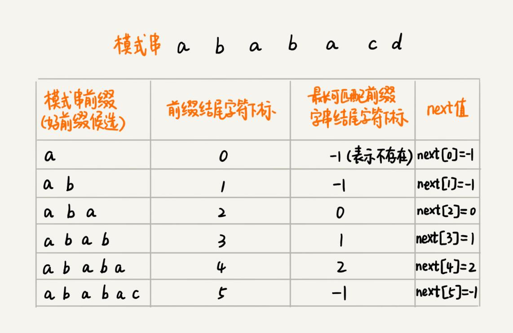
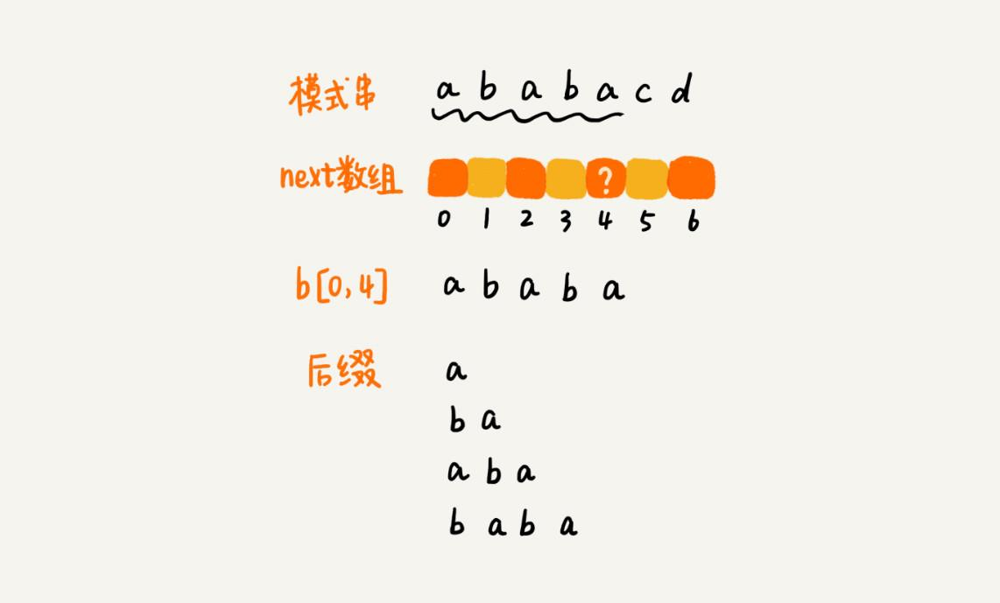
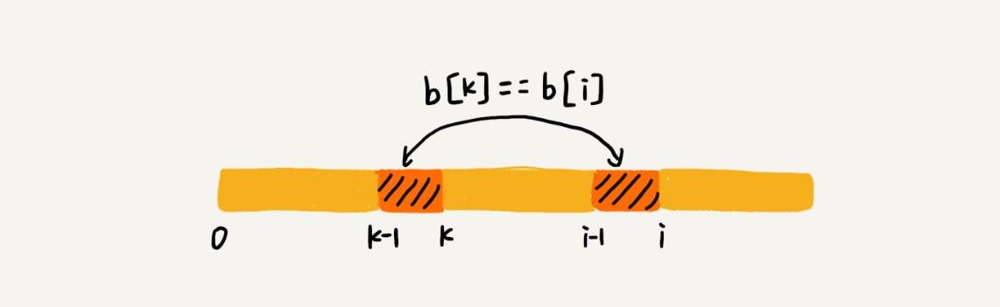
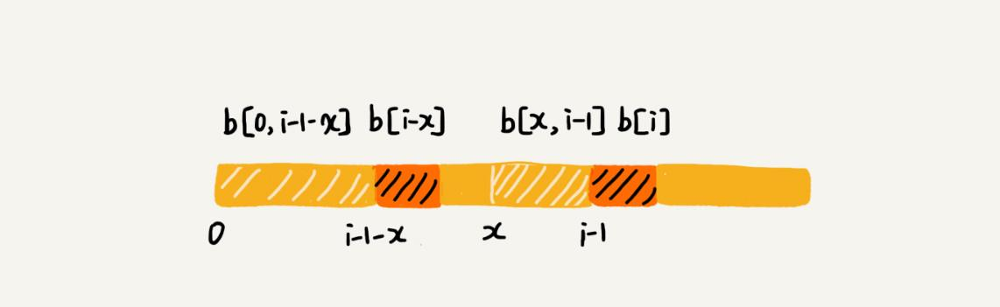
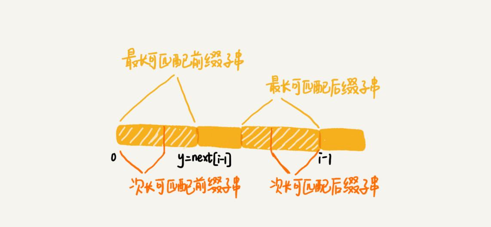

本文最后更新于：9 个月前
BM 算法尽管很复杂，也不好理解，但却是工程中非常常用的一种高效字符串匹配算法。有统计说，它是最高效、最常用的字符串匹配算法。不过，在所有的字符串匹配算法里，要说最知名的一种的话，那就非 KMP 算法莫属。很多时候，提到字符串匹配，首先想到的就是 KMP 算法。实际上，KMP 算法跟 BM 算法的本质是一样的。
KMP 算法基本原理
KMP 算法是根据三位作者（D.E.Knuth，J.H.Morris 和 V.R.Pratt）的名字来命名的，算法的全称是 Knuth Morris Pratt 算法，简称为 KMP 算法。
KMP 算法的核心思想，跟 BM 算法非常相近。假设主串是 a，模式串是 b。在模式串与主串匹配的过程中，当遇到不可匹配的字符的时候，希望找到一些规律，可以将模式串往后多滑动几位，跳过那些肯定不会匹配的情况。
还记得上篇文章的好后缀和坏字符吗？这里可以类比一下，在模式串和主串匹配的过程中，把不能匹配的那个字符仍然叫作坏字符，把已经匹配的那段字符串叫作好前缀。

当遇到坏字符的时候，就要把模式串往后滑动，在滑动的过程中，只要模式串和好前缀有上下重合，前面几个字符的比较，就相当于拿好前缀的后缀子串，跟模式串的前缀子串在比较。这个比较的过程能否更高效呢？可以不用一个字符一个字符地比较吗？
KMP 算法就是在试图寻找一种规律：在模式串和主串匹配的过程中，当遇到坏字符后，对于已经比对过的好前缀，能否找到一种规律，将模式串一次性滑动很多位？
只需要拿好前缀本身，在它的后缀子串中，查找最长的那个可以跟好前缀的前缀子串匹配的。假设最长的可匹配的那部分前缀子串是{v}，长度是 k。把模式串一次性往后滑动 j-k 位，相当于，每次遇到坏字符的时候，就把 j 更新为 k，i 不变，然后继续比较。

为了表述起来方便，把好前缀的所有后缀子串中，最长的可匹配前缀子串的那个后缀子串，叫作最长可匹配后缀子串；对应的前缀子串，叫作最长可匹配前缀子串。

如何来求好前缀的最长可匹配前缀和后缀子串呢？这个问题其实不涉及主串，只需要通过模式串本身就能求解。所以，能不能事先预处理计算好，在模式串和主串匹配的过程中，直接拿过来就用呢？
类似 BM 算法中的 bc、suffix、prefix 数组，KMP 算法也可以提前构建一个数组，用来存储模式串中每个前缀（这些前缀都有可能是好前缀）的最长可匹配前缀子串的结尾字符下标。把这个数组定义为next 数组，很多书中还给这个数组起了一个名字，叫失效函数（failure function）。
数组的下标是每个前缀结尾字符下标，数组的值是这个前缀的最长可以匹配前缀子串的结尾字符下标。这句话有点拗口，举一个例子。

有了 next 数组，很容易就可以实现 KMP 算法了。先假设 next 数组已经计算好了，先给出 KMP 算法的框架代码。
// a, b 分别是主串和模式串；n, m 分别是主串和模式串的长度。
public static int kmp(char[] a, int n, char[] b, int m) {
int[] next = getNexts(b, m);
int j = 0;
for (int i = 0; i < n; ++i) {
while (j > 0 && a[i] != b[j]) { // 一直找到 a[i] 和 b[j]
j = next[j - 1] + 1;
}
if (a[i] == b[j]) {
++j;
}
if (j == m) { // 找到匹配模式串的了
return i - m + 1;
}
}
return -1;
}失效函数计算方法
KMP 算法的基本原理讲完了，现在来看最复杂的部分，也就是 next 数组是如何计算出来的？
当然，可以用非常笨的方法，比如要计算下面这个模式串 b 的 next[4]，就把 b[0, 4] 的所有后缀子串，从长到短找出来，依次看看，是否能跟模式串的前缀子串匹配。很显然，这个方法也可以计算得到 next 数组，但是效率非常低。有没有更加高效的方法呢？

这里的处理非常有技巧，类似于动态规划。
按照下标从小到大，依次计算 next 数组的值。当要计算 next[i] 的时候，前面的 next[0]，next[1]，……，next[i-1] 应该已经计算出来了。利用已经计算出来的 next 值，是否可以快速推导出 next[i] 的值呢？
如果 next[i-1] = k-1，也就是说，子串 b[0, k-1] 是 b[0, i-1] 的最长可匹配前缀子串。如果子串 b[0, k-1] 的下一个字符 b[k]，与 b[0, i-1] 的下一个字符 b[i] 匹配，那子串 b[0, k] 就是 b[0, i] 的最长可匹配前缀子串。所以，next[i] 等于 k。但是，如果 b[0, k-1] 的下一字符 b[k] 跟 b[0, i-1] 的下一个字符 b[i] 不相等呢？这个时候就不能简单地通过 next[i-1] 得到 next[i] 了。这个时候该怎么办呢？

假设 b[0, i] 的最长可匹配后缀子串是 b[r, i]。如果把最后一个字符去掉，那 b[r, i-1] 肯定是 b[0, i-1] 的可匹配后缀子串，但不一定是最长可匹配后缀子串。所以，既然 b[0, i-1] 最长可匹配后缀子串对应的模式串的前缀子串的下一个字符并不等于 b[i]，那么就可以考察 b[0, i-1] 的次长可匹配后缀子串 b[x, i-1] 对应的可匹配前缀子串 b[0, i-1-x] 的下一个字符 b[i-x] 是否等于 b[i]。如果等于，那 b[x, i] 就是 b[0, i] 的最长可匹配后缀子串。

可是，如何求得 b[0, i-1] 的次长可匹配后缀子串呢？次长可匹配后缀子串肯定被包含在最长可匹配后缀子串中，而最长可匹配后缀子串又对应最长可匹配前缀子串 b[0, y]。于是，查找 b[0, i-1] 的次长可匹配后缀子串，这个问题就变成，查找 b[0, y] 的最长匹配后缀子串的问题了。

按照这个思路，可以考察完所有的 b[0, i-1] 的可匹配后缀子串 b[y, i-1]，直到找到一个可匹配的后缀子串，它对应的前缀子串的下一个字符等于 b[i]，那这个 b[y, i] 就是 b[0, i] 的最长可匹配后缀子串。
前面已经给出 KMP 算法的框架代码了，现在把这部分的代码也写出来了。这两部分代码合在一起，就是整个 KMP 算法的代码实现。
// b 表示模式串，m 表示模式串的长度
private static int[] getNexts(char[] b, int m) {
int[] next = new int[m];
next[0] = -1;
int k = -1;
for (int i = 1; i < m; ++i) {
while (k != -1 && b[k + 1] != b[i]) {
k = next[k];
}
if (b[k + 1] == b[i]) {
++k;
}
next[i] = k;
}
return next;
}KMP 算法复杂度分析
空间复杂度很容易分析，KMP 算法只需要一个额外的 next 数组，数组的大小跟模式串相同。所以空间复杂度是 $O(m)$，m 表示模式串的长度。
KMP 算法包含两部分，第一部分是构建 next 数组，第二部分才是借助 next 数组匹配。所以，关于时间复杂度，要分别从这两部分来分析。
先来分析第一部分的时间复杂度。
计算 next 数组的代码中，第一层 for 循环中 i 从 1 到 m-1，也就是说，内部的代码被执行了 m-1 次。for 循环内部代码有一个 while 循环，如果能知道每次 for 循环、while 循环平均执行的次数，假设是 k，那时间复杂度就是 $O(k*m)$。但是，while 循环执行的次数不怎么好统计，所以放弃这种分析方法。
可以找一些参照变量，i 和 k。i 从 1 开始一直增加到 m，而 k 并不是每次 for 循环都会增加，所以，k 累积增加的值肯定小于 m。而 while 循环里 k = next[k]，实际上是在减小 k 的值，k 累积都没有增加超过 m，所以 while 循环里面 k = next[k] 总的执行次数也不可能超过 m。因此，next 数组计算的时间复杂度是 $O(m)$。
再来分析第二部分的时间复杂度。分析的方法是类似的。
i 从 0 循环增长到 n-1，j 的增长量不可能超过 i，所以肯定小于 n。而 while 循环中的那条语句 j = next[j-1]+1，不会让 j 增长的，那有没有可能让 j 不变呢？也没有可能。因为 next[j-1] 的值肯定小于 j-1，所以 while 循环中的这条语句实际上也是在让 j 的值减少。而 j 总共增长的量都不会超过 n，那减少的量也不可能超过 n，所以 while 循环中的这条语句总的执行次数也不会超过 n，所以这部分的时间复杂度是 $O(n)$。
所以，综合两部分的时间复杂度，KMP 算法的时间复杂度就是 $O(m+n)$。
总结
KMP 算法和 BM 算法的本质非常类似，都是根据规律在遇到坏字符的时候，把模式串往后多滑动几位。
BM 算法有两个规则，坏字符和好后缀。KMP 算法借鉴 BM 算法的思想，可以总结成好前缀规则。这里面最难懂的就是 next 数组的计算。如果用最笨的方法来计算，确实不难，但是效率会比较低。所以，上面讲了一种类似动态规划的方法，按照下标 i 从小到大，依次计算 next[i]，并且 next[i] 的计算通过前面已经计算出来的 next[0]，next[1]，……，next[i-1] 来推导。
KMP 算法的时间复杂度是 $O(n+m)$，不过它的分析过程稍微需要一点技巧，不那么直观，只要看懂就好了，并不需要掌握，在平常的开发中，很少会有这么难分析的代码。
思考
BF 算法、RK 算法、BM 算法和 KMP 算法，关于这些算法，你觉得什么地方最难理解呢？欢迎留言和我分享。
本博客所有文章除特别声明外，均采用 CC BY-SA 3.0协议 。转载请注明出处！